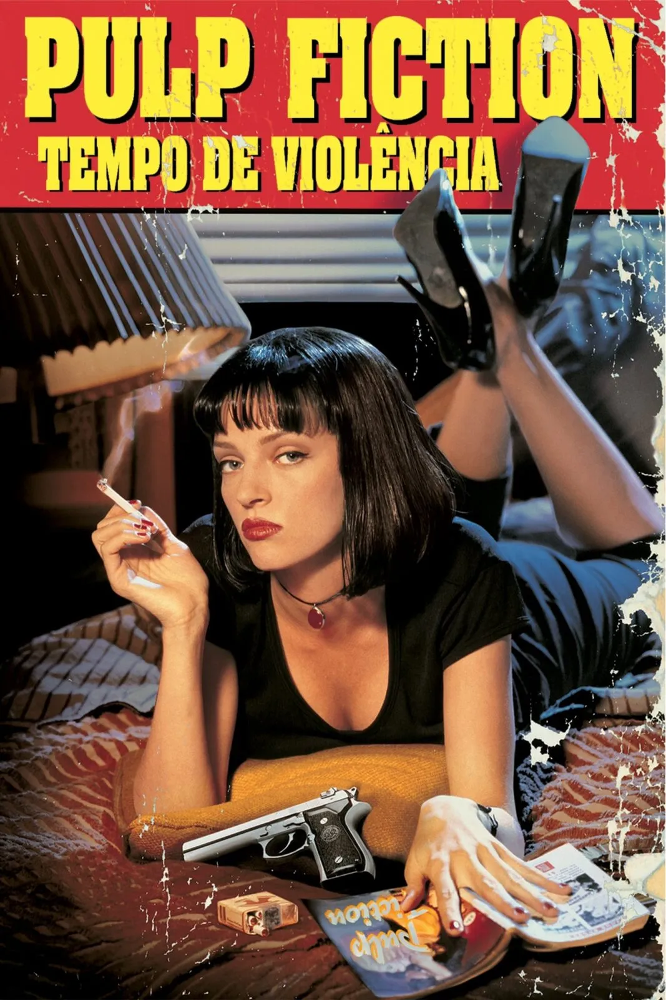
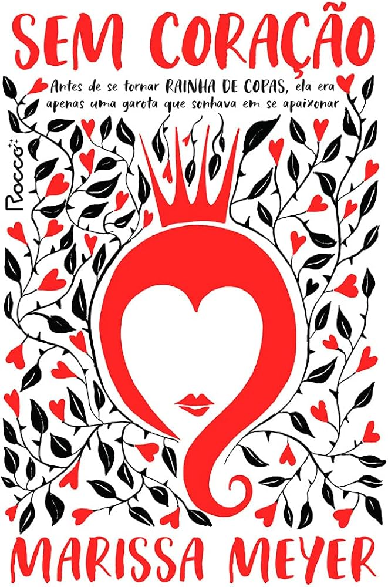
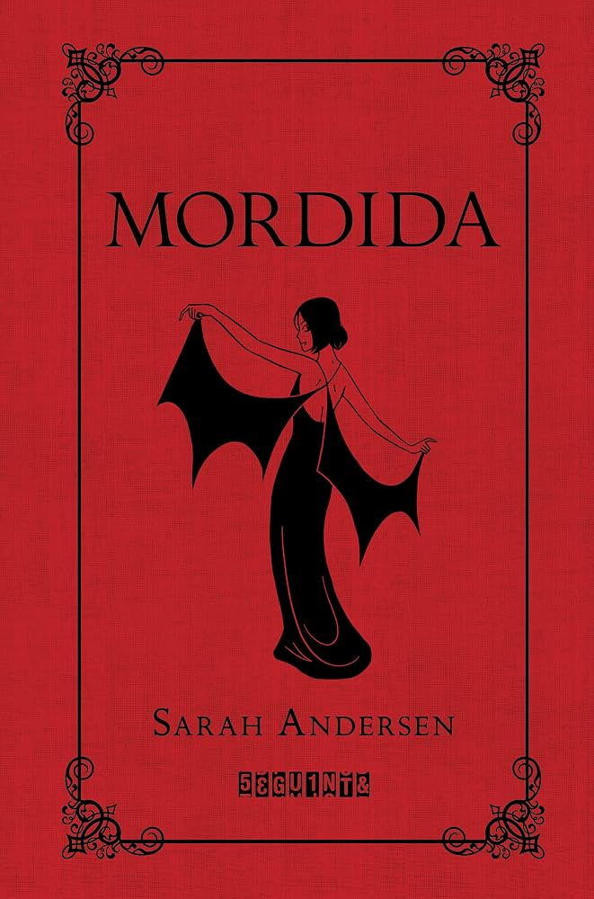
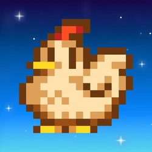
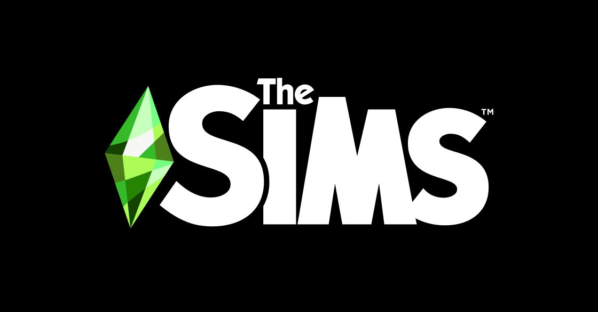
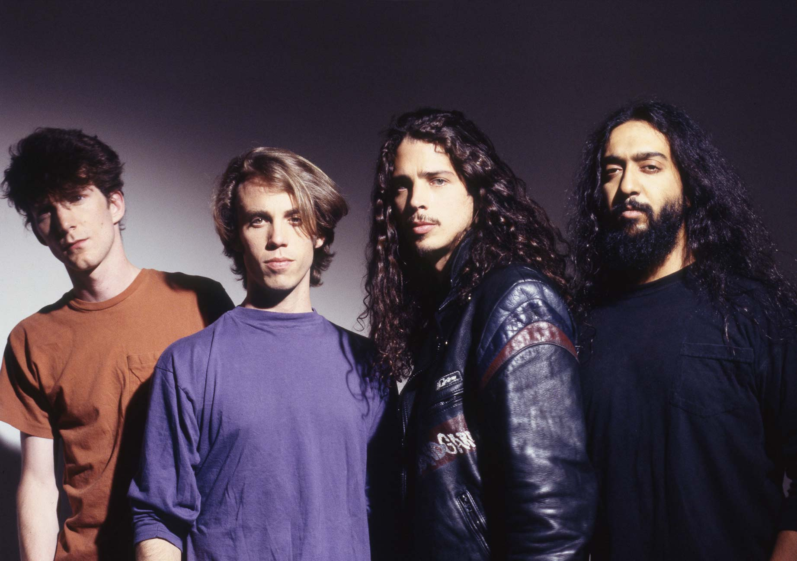
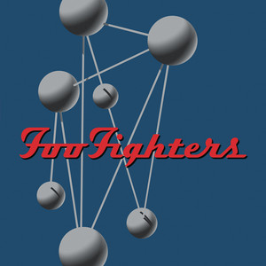
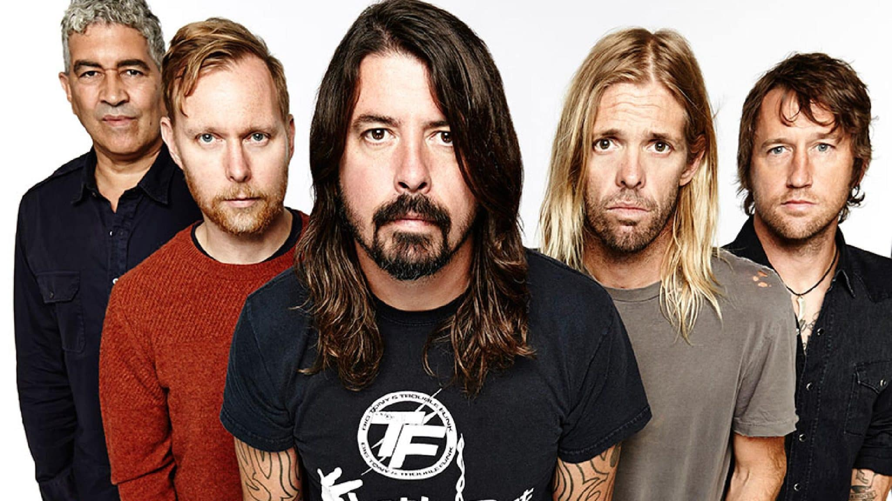
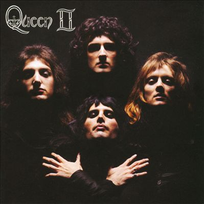
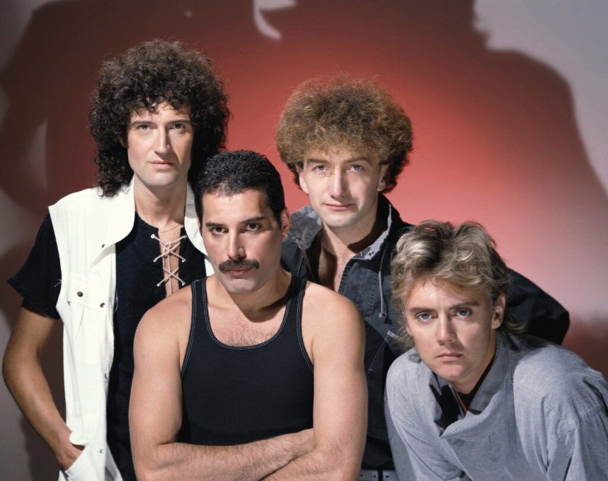

Filmes e Livros
Pulp Fiction

Trailer do filmePulp Fiction: Tempo de Violência (1994), dirigido por Quentin Tarantino, é um clássico do cinema independente estruturado de forma não linear que entrelaça histórias criminosas em Los Angeles.
Clube da Luta
 Trailer do filme
Trailer do filme
Clube da Luta (Fight Club, 1999), dirigido por David Fincher e baseado no romance homônimo de Chuck Palahniuk, acompanha um jovem executivo insone e desiludido com sua vida corporativa e o consumismo vazio.
Sem Coração

Link para comprar o livroSem Coração é um livro de fantasia de Marissa Meyer que reconta a origem da Rainha de Copas (de Alice no País das Maravilhas) muito antes de ela se tornar a famosa vilã.
Mordida

Link para comprar o livroO livro Mordida (título original: Fangs), de Sarah Andersen, é uma história em quadrinhos que mistura humor ácido e romance.
Jogos
Minecraft
 Curiosidades sobre o jogo
Link para comprar o jogo
Curiosidades sobre o jogo
Link para comprar o jogo
Minecraft é um jogo eletrônico sandbox de sobrevivência de 2011 desenvolvido e publicado pela desenvolvedora sueca Mojang Studios. Originalmente criado por Markus "Notch" Persson usando a linguagem de programação Java, a primeira versão alfa pública foi lançada em 17 de maio de 2009.
Roblox
 Curiosidades sobre o jogo
Link para baixar o jogo
Curiosidades sobre o jogo
Link para baixar o jogo
Roblox é uma plataforma de jogos online e um sistema de criação de jogos desenvolvido pela Roblox Corporation que permite aos usuários programar e jogar jogos criados por eles próprios ou por outros usuários. Foi criado por David Baszucki e Erik Cassel em 2004 e lançado ao público em 2006.
Stardew Valley

Curiosidades sobre o jogo Link para comprar o jogoStardew Valley é um videogame RPG de simulação desenvolvido por Eric "ConcernedApe" Barone. Os jogadores assumem o papel de um personagem que herda a fazenda dilapidada de seu falecido avô em um lugar conhecido como Stardew Valley.
The Sims

Curiosidades sobre o jogo Link para baixar o jogoThe Sims é uma série de jogos eletrônicos de simulação de vida criada pelo designer de jogos Will Wright, produzida pela Maxis e publicada pela EA Games. O primeiro jogo da série, The Sims, foi lançado em 4 de fevereiro de 2000.
Músicas
Black Hole Sun
 Clipe da música
Clipe da música
A música "Black Hole Sun" da banda Soundgarden, lançada em 1994 e composta por Chris Cornell, é uma metáfora surreal sobre a hipocrisia, o caos, a exaustão emocional e o lado sombrio da sociedade.
Sobre o Soundgarden

Soundgarden foi uma banda de rock norte-americana formada em 1984, em Seattle, Washington e que, ao lado de Nirvana, Alice in Chains e Pearl Jam, constituiu-se como um dos principais representantes do movimento grunge, incorporando, no entanto, uma maior variedade musical que as restantes bandas.
Everlong

Clipe da música"Everlong" do Foo Fighters é uma balada de rock alternativo sobre uma conexão romântica intensa, o medo de perder essa sensação e o desejo de prolongar um momento perfeito.
Sobre o Foo Fighters

Foo Fighters é uma banda americana de rock formada em 1994, em Seattle, Washington. A banda foi fundada pelo ex-baterista do Nirvana, Dave Grohl, como um projeto de um homem só, após a dissolução do Nirvana, devido ao suicídio de Kurt Cobain.
Bohemian Rhapsody

Clipe da música"Bohemian Rhapsody", lançado pelo Queen em 1975 e composto por Freddie Mercury, nunca foi revelado oficialmente pelo autor, tornando-se um dos maiores mistérios da música. O próprio Freddie dizia que a letra tratava de relacionamentos e deixava aberta à interpretação pessoal, misturando trechos sem sentido aparente.
Sobre o Queen

Queen foi uma banda britânica de rock, fundada em 1970 e ativa, sob sua formação clássica, até 1991. O grupo, formado por Brian May, Freddie Mercury, John Deacon e Roger Taylor, é frequentemente citado como um dos expoentes do seu estilo, também sendo um dos recordistas de vendas de discos a nível mundial.